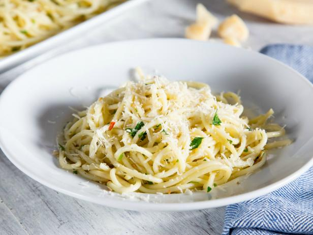

Spaghetti with Olive Oil and Garlic

Aglio e Olio
This is a basic, but delicious Italian pasta dish known as
Aglio e Olio, or Spaghetti with Oil and Garlic
Ingredients
- 1 pound spaghetti
- 3 cloves garlic, minced
- 2 Tbs parsley flakes
- 1/2 lemon zested, optional
- Crushed red pepper
- Salt, as needed for water
- Grated parmesan cheese
Steps
- Boil large pot of salted water over high heat
- Add pasta and cook, stirring occasionally until
al dente, about 8 minutes
- Combine garlic, olive oil, salt, and red pepper flakes
in large skillet and warm over low heat until garlic
turns golden
- Drain pasta, reserving 1/4 cup water
- Add pasta and reserved water to garlic mixture
- Mix well and add parsley and lemon zest
- Serve in large bowl and top with grated cheese